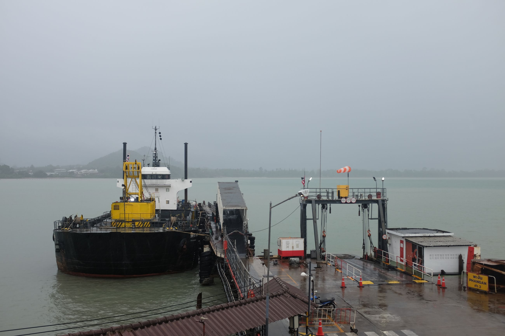
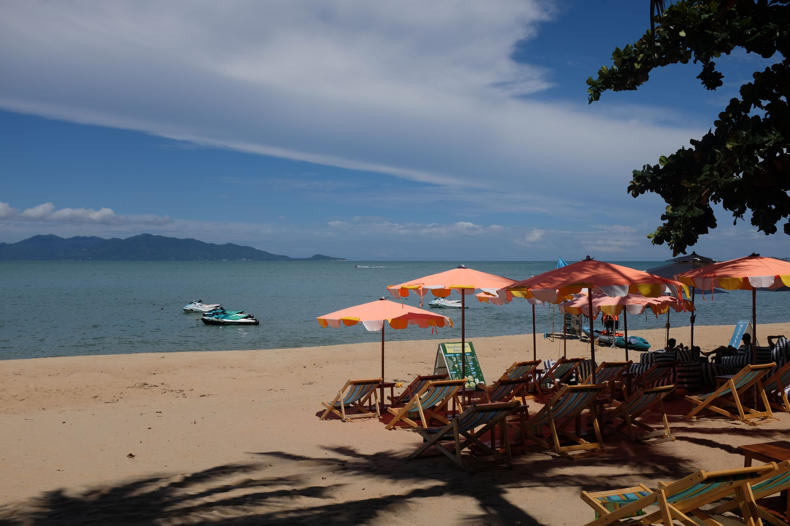
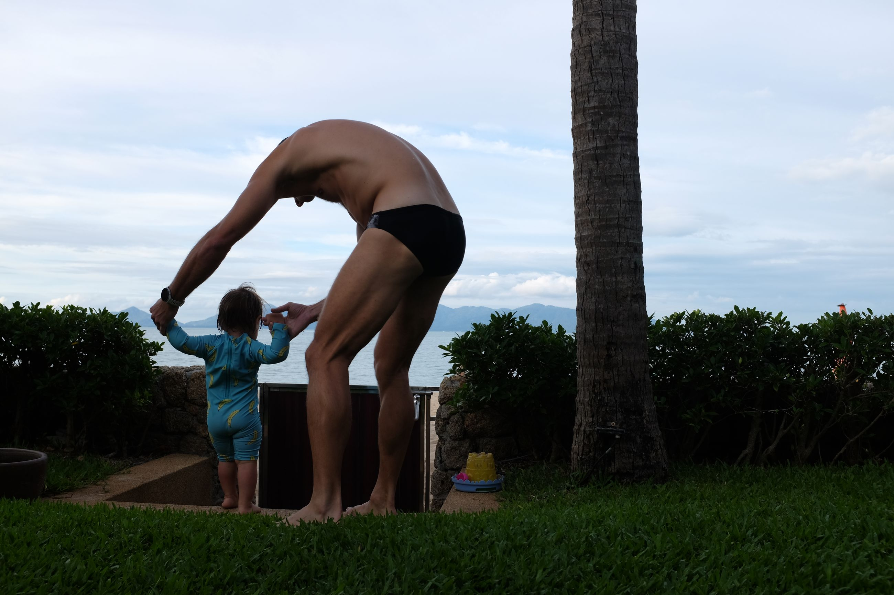
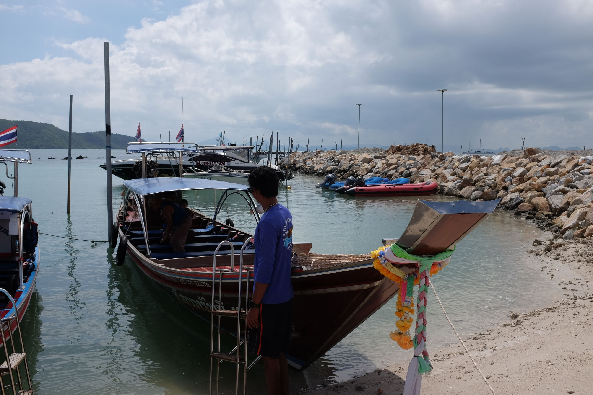
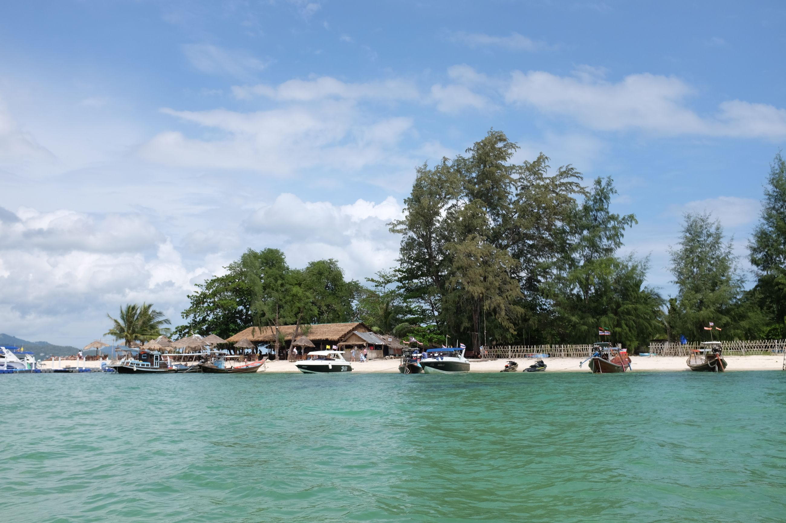
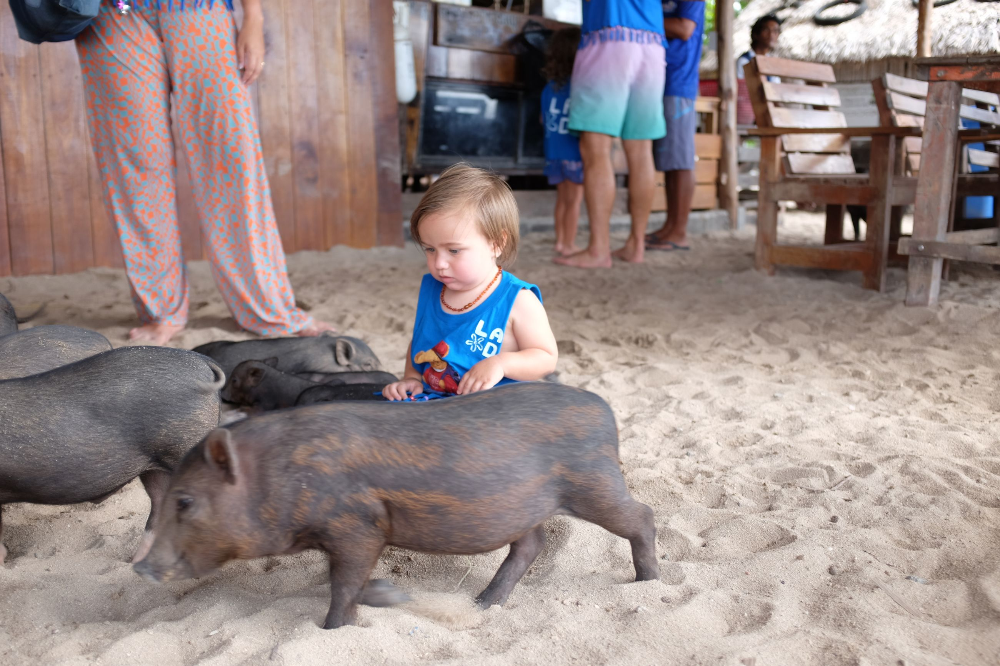
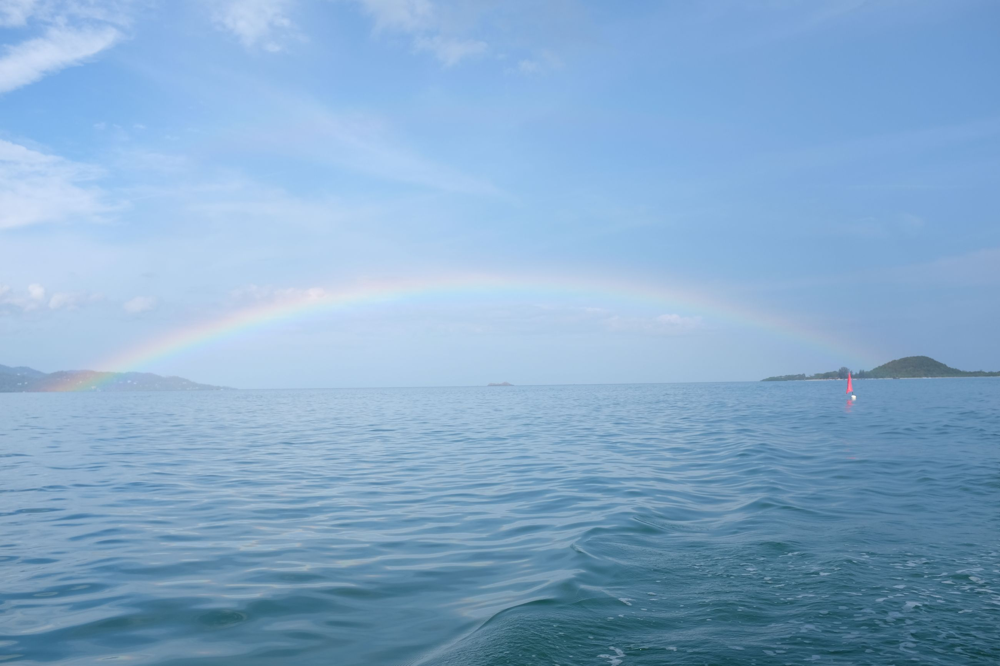

The universe keeps telling me, no matter how much I intend to not come back to this island, I'll never get away. This time, the reason for coming was because I won a 3-night, 4-day stay at Miskawaan villas from a lucky draw (attending a friend's one year anniversary of her company). My hesitation to come back to this island subsided quickly.
Getting here was part of the fun. We flew to Surat Thani, a nearby town on the Thai mainland near Koh Samui. After spending a night in a hut, we took the ferry the following morning to Koh Samui.

We spent three days on the island relaxing in the villa. And that was it. Countless hours, staring out into the beach, just hanging around, spending time with our friends and their kids, and drinking. On the 1st of November, we went to pig island. It's exactly what it said it was on the tin: an island with pigs, brought over by some white people. And there are a lot of white people on the island.
I'll manifest what I did last time again: I don't think I'll be coming back. Let's see when the next time I unsuspectingly get called back is.
The only thing different this time -- I have pictures.
     